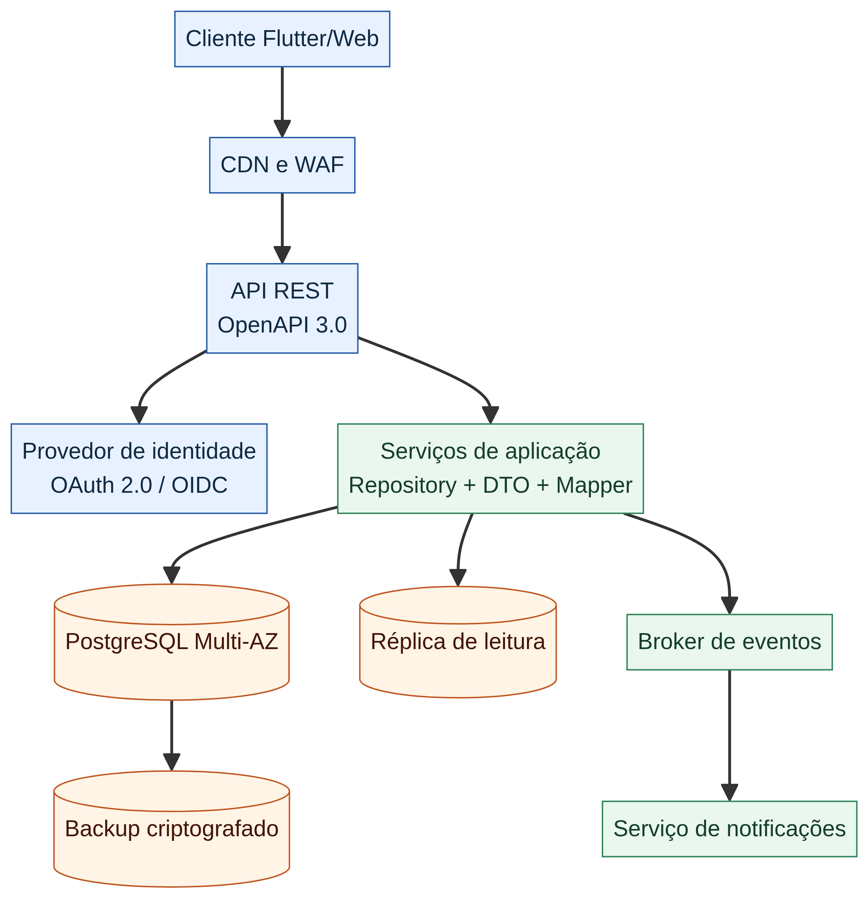
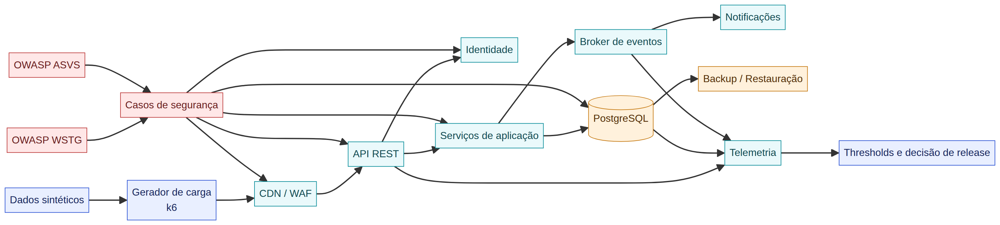

Plano visual para validar o fluxo de autenticação do E-Project com testes unitários e de integração, e preparar a futura implantação remota para testes de carga, resiliência e segurança.
Os testes unitários isolam validadores, `AuthService`, mapper/DTO e controle de sessão. Eles não acessam rede nem banco real e devem ser rápidos o suficiente para executar a cada alteração.
UNITÁRIO
O que validar
Formato e obrigatoriedade de e-mail, senha mínima, credencial válida, usuário inexistente, senha incorreta, erro de repositório, logout idempotente e ausência de `passwordHash` no DTO.
Critério: entradas inválidas não chamam o repositório; falhas não criam sessão; o DTO exposto à UI é seguro.
EVIDÊNCIA
O que registrar
ID do teste, versão do código, fixture sintética, resultado, duração e cobertura de decisões. O relatório não pode conter senhas, tokens, CPF, CNS ou dados reais.
Os testes de integração percorrem o caminho do diagrama de sequência: cliente/tela → `AuthService` → repositório → SQLite → retorno seguro. Cada suíte usa banco temporário, schema controlado e dados sintéticos.
O plano vale para a implantação futura com API, identidade, PostgreSQL, réplica, broker, notificações, CDN/WAF e backup. Os números abaixo são metas iniciais a aprovar, não resultados já medidos.

Arquitetura candidata: serviços remotos, banco, eventos e backup.

Pipeline de teste: dados sintéticos, k6, WAF, API, persistência, telemetria e decisão.
Perfil
Duração
Objetivo
Gate inicial
Smoke
5 min
Contrato e conectividade.
Sem erro bloqueante.
Baseline
15 min
Medir p50/p95/p99.
p95 ≤ 2 s.
Load
30 min
Pico esperado.
5xx < 0,5%.
Stress
Até limite
Encontrar saturação controlada.
Sem perda de dados.
Spike
10 min
Salto de tráfego.
Recuperação ≤ 10 min.
Soak
2–8 h
Detectar vazamentos.
Sem degradação contínua.
Recovery
15–30 min
Recuperar após falha.
Backlog processado.
04 · Defesa
🛡️ Plano de testes de segurança
A abordagem combina verificação de requisitos de segurança e testes ativos autorizados. A referência deve ser versionada: o WSTG recomenda identificadores versionados para evitar ambiguidade entre versões; o ASVS fornece requisitos verificáveis para aplicações e serviços web. [WSTG] [ASVS]
AUTORIZAÇÃO
🧱 Controle de acesso
Testar BOLA/IDOR em projetos e tarefas, alteração de identificadores, sessão expirada, token revogado, CORS, headers e privilégio mínimo no banco.
ENTRADA
🔍 Dados hostis
Testar SQL Injection, XSS, payloads excessivos, schema inválido, encoding, caracteres de controle e limites de tamanho. O resultado esperado é rejeição segura e sem efeito lateral.
RESILIÊNCIA
🚦 Abuso e disponibilidade
Testar rate limiting, brute force autorizado, replay de eventos, filas, dead letters, WAF e comportamento de degradação. Interromper ao detectar impacto fora do escopo.
SUPPLY CHAIN
🔐 Segredos e dependências
Executar secret scanning, SCA, SBOM, verificação de imagem de contêiner, TLS e restauração de backup. Vulnerabilidade crítica bloqueia release ou exige aceite formal do risco.
⚠️ Regra operacional: qualquer teste agressivo deve possuir autorização, janela, contatos, limites, critério de abortamento e plano de reversão. Não executar pentest ou stress em produção sem aprovação formal.
05 · Automação
📈 Thresholds e decisão de release
O k6 é uma opção de ferramenta aberta para testes de carga, performance, spike, stress, soak e automação. Os limites devem falhar automaticamente quando a regressão exceder o acordo aprovado.
O exemplo é conceitual: URLs, autenticação, dados, tags, métricas de negócio, teardown e thresholds finais ainda precisam ser definidos no ambiente de staging.
Gate final: promover somente com testes críticos aprovados, relatório de carga, achados de segurança tratados ou aceitos, evidências anexadas e aprovação de QA, arquitetura, produto e segurança.